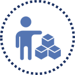

TĂNG TRƯỞNG BỀN VỮNG
Tăng trưởng kinh tế bền vững
Hiệu quả kinh tế
2021 là một năm khó khăn khi toàn nền kinh tế bị gián đoạn, ngưng trệ bởi dịch bệnh hoành hành, đã tác động xấu tới nhiều doanh nghiệp trong đó có NHA. Bước sang năm 2022, khó khăn vẫn chưa dừng lại khi hoạt động kinh doanh của Công ty tiếp tục bị ảnh hưởng nghiêm trọng trước bối cảnh khó khăn chung của toàn ngành BĐS và những biến động vĩ mô không mấy tích cực. Trước tình hình đó, Công ty ưu tiên chiến lược duy trì tài chính lành mạnh, ổn định để hạn chế rủi ro tối đa. Tài sản của Công ty vẫn duy trì tốc độ tăng trưởng trong 5 năm trở lại đây với tốc độ tăng trưởng CAGR ấn tượng 143% khi Công ty đang ngày càng phát triển và mở rộng quy mô hoạt động. Trong năm qua, Công ty cũng đã thực hiện đợt tăng vốn thông qua phát hành cho cổ đông hiện hữu nâng vốn chủ sở hữu lên 421 tỷ đồng, tăng gần 50% so với năm trước. Công ty đã lường trước được những rủi ro về lãi suất để từ đó điều chỉnh nợ vay và ưu tiên sử dụng vốn chủ, nhờ vậy Công ty vẫn duy trì tài chính ổn định, không gặp khó khăn về dòng tiền.
Vốn điều lệ
2022
421
tỷ đồng
Tăng 50% so với
năm 2021
Tổng tài sản
2022
697
tỷ đồng
Tăng 32% so với
năm 2021
Lợi nhuận sau thuế
2022
1,8 tỷ đồng
Phát triển kinh tế địa phương:
Các dự án do Công ty thực hiện luôn thúc đẩy phát triển kinh tế địa phương. Các dự án hệ thống giao thông đường bộ kết nối với dự án nhà ở, nhằm gia tăng mỹ quan, giảm tải mật độ giao thông được di chuyển dễ dàng hơn. Trong năm 2022, các dự án của Công ty góp phần đẩy nhanh quá trình phát triển kinh tế địa phương tại khu vực Duy Tiên, Hà Nam. Mỗi dự án đều góp phần nhất định vào sự phát triển hạ tầng kỹ thuật và hạ tầng xã hội cho địa phương như đường giao thông, trường học…
Nguồn nhân lực bền vững
Chất lượng nguồn nhân lực là một trong những yếu tố quan trọng quyết định sự phát triển lâu dài và bền vững của một doanh nghiệp, do vậy Công ty luôn đặt mục tiêu xây dựng và phát triển đội ngũ nhân viên làm việc hiệu quả, chuyên nghiệp và năng động. Công ty không ngừng nỗ lực phấn đấu tạo dựng môi trường làm việc tốt, luôn duy trì, áp dụng những chính sách đãi ngộ phù hợp, đảm bảo sự hài hòa giữa lợi ích của CBNV với điều kiện, bối cảnh hoạt động cụ thể của doanh nghiệp.

Cơ cấu nhân sự, đa dạng
Công ty luôn nỗ lực chuẩn hóa nguồn lực nhằm thực hiện hóa tầm nhìn chiến lược kinh doanh bền vững, trong đó nguồn lực là tài sản có giá trị lớn nhất có vai trò quyết định. Trong năm 2022, Công ty tiếp tục tiến hành tái cơ cấu, chuẩn hóa nguồn lực để xây dựng đội ngũ vững về kiến thức và chuyên môn để cùng đồng hành sự phát triển lớn mạnh trong năm 2023.
Tính đến 31/12/2022, số lượng cán bộ, nhân viên của Công ty là 101 người với hợp đồng lao động chính thức là 36 người, số còn lại là hợp đồng mùa vụ và thông qua các đội trưởng quản lý và tuyển dụng. Về Chất lượng nguồn nhân sự, của Công ty có hơn 30% nhân sự có trình độ Đại học, Cao đăng, trung cấp.
Việc làm & Tuyển dụng
Công ty cam kết tạo công ăn việc làm cho người lao động thông qua định hướng và chiến lược phát triển kinh doanh. Mục tiêu tuyển dụng của Công ty hướng đến kỹ năng chuyên môn hóa cao trong tất các bộ phận công tác, Công ty luôn khuyến khích người lao động nâng cao năng lực nghiệp vụ, chuyên môn để đảm bảo hoàn thiện nhiệm vụ tốt nhất.

Chính sách đào tạo
Công ty chủ động việc đẩy mạnh các hoạt động đào tạo, bồi dưỡng, đặc biệt là kỹ năng nghiệp vụ chuyên môn đối với nhân viên nghiệp vụ. Việc đào tạo tại Công ty được thực hiện theo định hướng sau:
- Đối với người lao động trực tiếp: mở các lớp bồi dưỡng tại chỗ để nâng cao trình độ tay nghề và sự hiểu biết của người lao động về ngành hàng. Công ty tiến hành đào tạo và đào tạo lại nhằm nâng cao hiệu quả lao động của các lao động hiện có. Người lao động cũng luôn được khuyến khích và tạo điều kiện tham gia các lớp đào tạo nâng cao trình độ về chuyên môn nhằm đáp ứng được yêu cầu mới trong công tác.
- Đối với lao động các phòng chuyên môn nghiệp vụ, Công ty luôn tạo điều kiện tham gia học với ngành nghề chuyên môn phù hợp với yêu cầu công việc, tham gia các lớp học bồi dưỡng nghiệp vụ ngắn hạn về các chế độ, chính sách Nhà nước.
Chế độ đãi ngộ
Công ty trả lương dựa trên cấp công việc, năng lực và chức vụ của nhân viên, bảng lương, tình hình và kết quả hoạt động kinh doanh chung của Công ty. Nhằm khuyến khích động viện cán bộ công nhân viên trong Công ty gia tăng hiệu quả đóng góp, tăng năng suất chất lượng hoàn thành công việc, Công ty có những chủ trương khen thưởng kịp thời như phát hành cổ phiếu thưởng cho cán bộ công nhân viên đối với cá nhân và tập thể có nhiều đóng góp xây dựng cho Công ty cũng như các sáng kiến làm tăng hiệu quả công việc. Việc xét thưởng căn cứ vào thành tích của các cá nhân hoặc tập thể trong việc thực hiện tiết kiệm, sáng kiến cải tiến về kỹ thuật, về phương pháp tổ chức kinh doanh, tìm kiếm được khách hàng mới, thị trường mới, hoàn thành xuất sắc nhiệm vụ được giao, đạt hiệu quả cao trong kinh doanh.
Tính đến 31/12/2022, số lượng cán bộ, nhân viên của Công ty là 101 người với hợp đồng lao động chính thức là 36 người, số còn lại là hợp đồng mùa vụ và thông qua các đội trưởng quản lý và tuyển dụng. Về Chất lượng nguồn nhân sự, của Công ty có hơn 30% nhân sự có trình độ Đại học, Cao đăng, trung cấp.
An toàn lao động
Trên cơ sở coi con người là nguồn tài sản lớn nhất của doanh nghiệp, Công ty đánh giá an toàn lao động và sức khỏe nghề nghiệp là yếu tố không thể thiếu cho nền tảng bền vững về nhân lực. Công tác an toàn lao động luôn được thực hiện tốt trong năm 2022. Trước khi triển khai thi công tại công trường, ban quản lý dự án luôn yêu cầu trình phương án đảm bảo an ninh trong suốt quá trình thi công nhằm: duy trì an ninh trong và ngoài công trường, tạo điều kiện thuận lợi cho hoạt động xây dựng, ngăn chặn hoạt động gây rối trật tự, hành vi trộm cắp tài sản…
BẢO VỆ MÔI TRƯỜNG
Quản lý tác động của môi trường: Quản lý kiểm soát tác động của môi trường trong hoạt động xây dựng là yêu cầu luôn được Công ty coi trọng, bên cạnh công tác đảm bảo chất lượng và an toàn các công trình phù hợp với hệ thống quản lý với tiêu chuẩn quốc tế. Các giải pháp kỹ thuật và quản lý trong thi công xây dựng được theo dõi giám sát chặt chẽ nhằm giảm thiểu các tác động trong từng giai đoạn triển khai các dự án, áp dụng sáng kiến trong hiệu quả sử dụng năng lượng, tài nguyên.
Kiểm soát vật liệu công trình: Trong tất cả các hoạt động thi công, Công ty gắn kết các hoạt động của doanh nghiệp với trách nhiệm về xã hội, môi trường và kinh tế, nhằm mục đích cải thiện chất lượng cuộc sống cho Khách hàng nói riêng, cộng đồng xung quanh và xã hội nói chung.
Trên tinh thần giảm tác động lên môi trường trong mức độ cho phép của các quy chuẩn, tiêu chuẩn xây dựng về sức bền vật liệu, an toàn kết cấu công trình và kiến trúc công trình xây dựng, Công ty chú trọng sử dụng vật liệu gạch và vật tư thiết bị kiến trúc với mục tiêu tiết kiệm năng lượng khi sản xuất và sử dụng. Vật liệu bê-tông cốt thép hiện nay vẫn là giải pháp vật liệu kết cấu bền vững, an toàn, phù hợp với điều kiện khí hậu Việt Nam đối với các công trình bất động sản nói chung và đặc biệt là các công trình nhà ở dân cư. Công ty thu hồi thép thải ra trong quá trình thi công để chuyển cho bên tái chế sản xuất thép, thu hồi gạch vụn để chuyển cho bên tái sử dụng cho việc san lấp mặt bằng, và luân chuyển tái sử dụng ván khuôn theo quy định và tiêu chuẩn ngành.
TRÁCH NHIỆM VỚI XÃ HỘI
Bên cạnh việc thực hiện đầy đủ nghĩa vụ thuế đóng góp vào tăng trưởng kinh tế của tỉnh Hà Nam. Tổng Công ty Đầu tư Phát triển Nhà và Đô thị Nam Hà Nội còn tích cực tham gia vào các hoạt động thiện nguyện, góp phần cải thiện đời sống tinh thần và vật chất của người dân trong tỉnh:
- Giai đoạn 2021-2022, Công ty đã chi khoảng hơn 300 triệu đồng ủng hộ vật tư thiết bị y tế giúp tỉnh Hà Nam ứng phó dịch Covid-19.
- Hưởng ứng chiến dịch vì người nghèo, Công ty hàng năm đã trích một khoản tiền khoảng 50 đến 100 triệu đồng ủng hộ với mục đích mua lương thực, thực phẩm giúp đảm bảo đời sống của người dân gặp khó khăn.
- Bên cạnh đó, thực hiện theo thư kêu gọi của tỉnh Hà Nam, Công ty hàng năm đóng góp phần nhỏ khoảng 150 triệu đồng vào quỹ phòng chống thiên tai hàng năm giúp ổn định cuộc sống của người dân và khôi phục sản xuất kinh doanh sau các đợt thiên tai, lũ lụt.
Tiết Kiệm Năng Lượng
Môi trường sống của Việt Nam đang chịu những tác động bất lợi của biến đổi khí hậu. Công ty nhận thức việc tiêu thụ năng lượng ở bất kỳ thời điểm nào cũng có thể gây ra tác động góp phần tạo ra biến đổi khí hậu trên quy mô toàn cầu. Trên tinh thần góp phần giảm tác động của biến đổi khí hậu, Công ty cam kết tiết kiệm năng lượng thông qua tối ưu hóa các nguồn lực hiện có của chúng tôi trong quá trình hoạt động. Do tính chất đặc thù liên quan đến xây dựng, sử dụng năng lượng chủ yếu là các thiết bị xây dựng, vận chuyển và vận hành hệ thống. Công ty luôn đảm bảo kiểm soát thời gian vận hành, khoảng cách di chuyển nguyên vật liệu, sử dụng thiết bị mới có hiệu suất cao nhằm hạn chế thất thoát nguyên liệu và tiết kiệm năng lượng. Bên cạnh đó, việc áp dụng các công nghệ mới trong quá trình thi công và vận hành hệ thống các dự án, cũng như theo dõi, kiểm soát các thiết bị điện trong suốt quá trình vận hành nhằm giảm điện năng tiêu thụ một cách tối ưu.
Tài nguyên nước được sử dụng một cách hiệu quả bằng việc thực hành tiết kiệm nước trong suốt quá trình thi công, đẩy mạnh công tác kiểm tra và kiểm soát các điểm cung cấp nước thô trong xây dựng dự án, cũng như quản lý việc sử dụng nước khi vận hành tòa nhà. Các dự án đang thi công đều tuân thủ giới hạn lượng nước ngầm khai thác và sử dụng trong phạm vi cho phép dựa trên đề án xây dựng đã được phê duyệt.
Sử Dụng Nước Hiệu Quả
Tuân Thủ Về Môi Trường
Công ty luôn nghiêm túc đánh giá tác động đến môi trường khi triển khai các dự án và quản lý vận hành công trình sau khi đưa vào sử dụng. Công ty đảm bảo các dự án và công trình đáp ứng các quy chuẩn, tiêu chuẩn về môi trường đồng thời đảm bảo chất lượng thiết kế và xây dựng công trình đáp ứng tốt các quy chuẩn và tiêu chuẩn hiện hành. Công ty hoàn toàn tuân thủ các yếu tố trọng yếu của các quy định, quy chuẩn về môi trường tại Việt Nam. Trong năm 2022 Công ty không phát sinh bất kỳ khiếu kiện hay xử phạt vi phạm nào do không tuân thủ luật pháp và các quy định về môi trường.
GẮN KẾT CÁC BÊN LIÊN QUAN
Một trong những nền tảng quan trọng để thực thi Chiến lược Phát triển bền vững và ổn định lâu dài của Công ty chính là mối quan hệ gắn kết với các bên. Công ty luôn tạo điều kiện để các bên có thể chia sẻ đầy đủ, chính xác các vấn đề mà các bên liên quan quan tâm thông qua những cách thức giao tiếp riêng biệt, phù hợp với từng bên liên quan (đối thoại trực tiếp, website, truyền thông đại chúng, ĐHĐCĐ Thường niên, BCTN,…).

| Bên liên quan | Mối quan tâm của các bên liên | Công ty thực hiện |
|---|---|---|
|
Khách hàng |
|
|
|
Cổ đông & nhà đầu tư |
|
|
|
Người lao động |
|
|
|

Nhà thầu, nhà cung cấp |
|
|
|
Cơ quan nhà nước/ chính quyền |
|
|
|
Tổ chức tín dụng |
|
|
|
Cộng đồng |
|
|